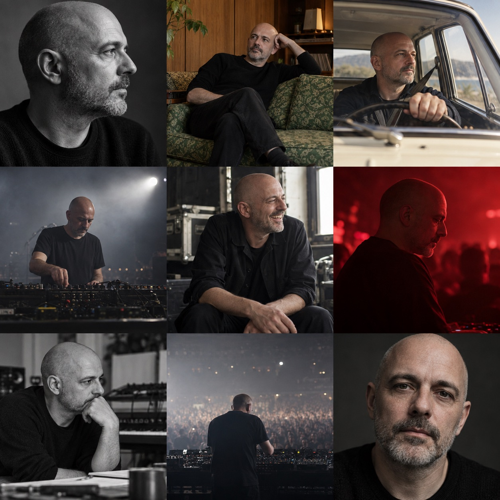
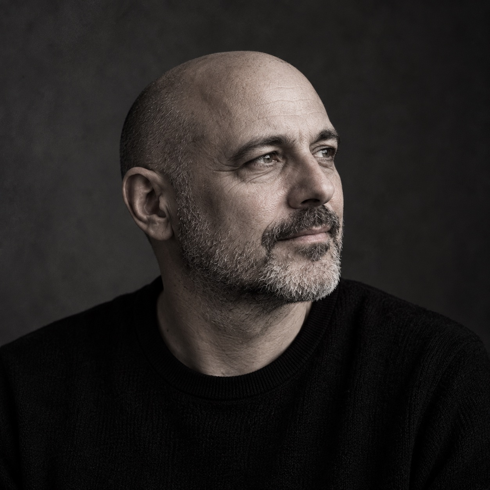
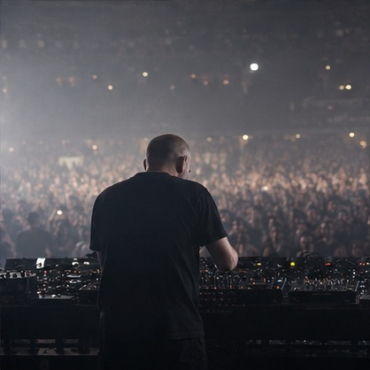
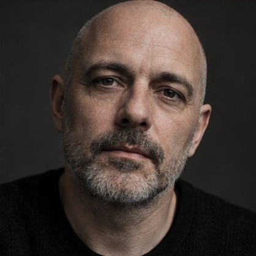
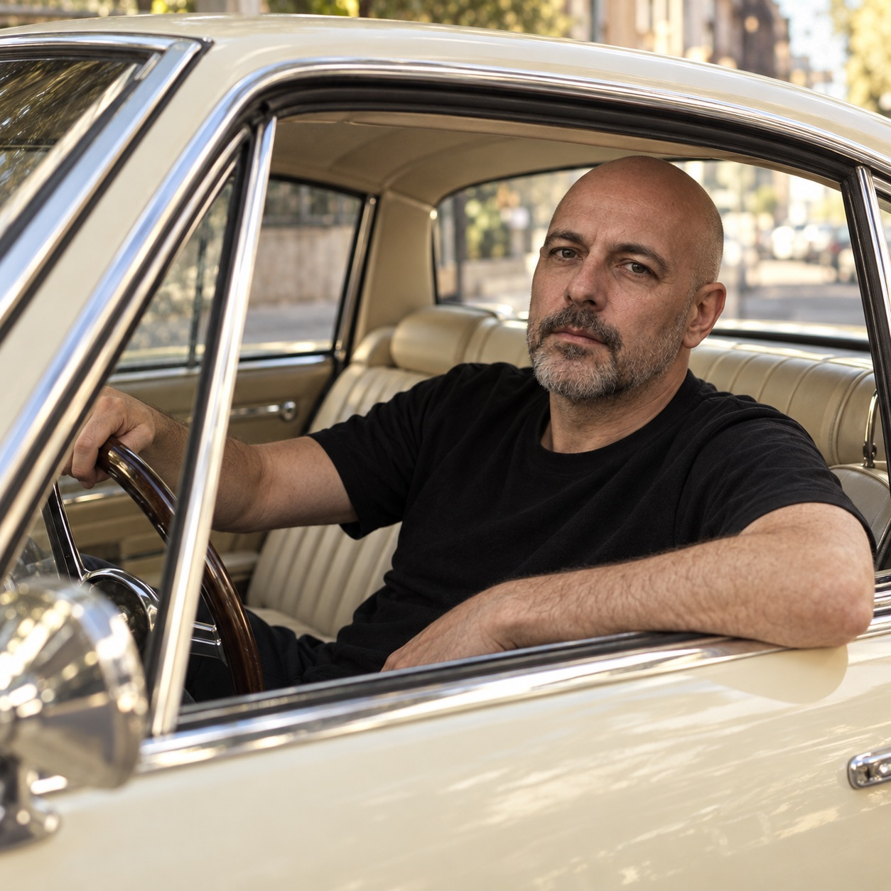
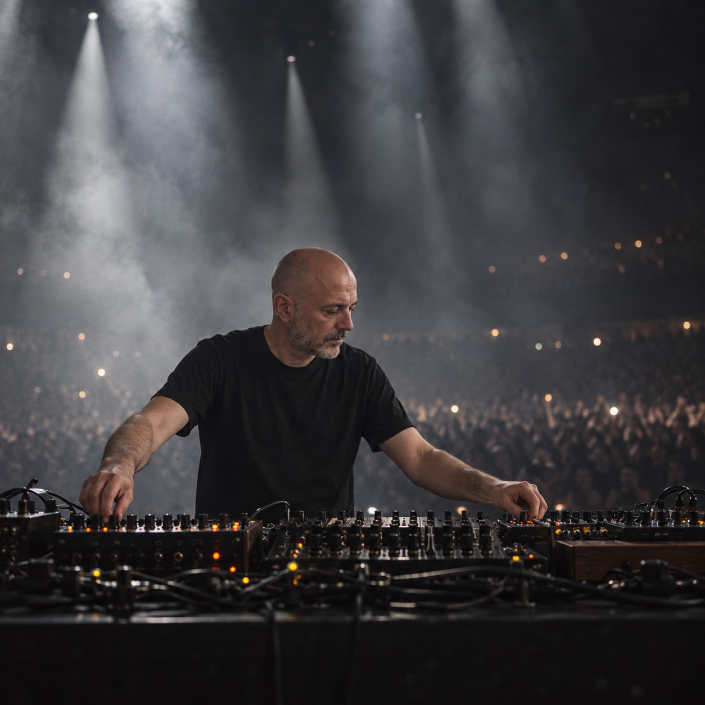
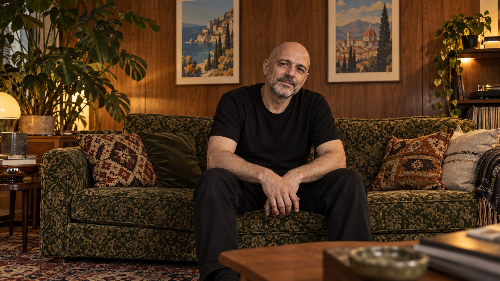

PaulKalkbrenner

A visual study of a life in electronic music, moving through sound, image, performance and place.
Experience
the
Pulse
of
Electronic
Music

recordings
Selected recordings, arranged across time.



THE ESSENCE
Available as:
CD & 12” Vinyl and digital
A set of recordings shaped by restless nights, open windows and the changing light of the city. This visual study follows those shifting moods through a small archive of sound and image.
Parts Of Life
Available as:
CD & 12” Vinyl and digital
A collection of brief scenes from the studio and the road, gathered into a record that moves between measured rhythms and wide open space.
7
Available as:
CD & 12” Vinyl and digital
A collection of brief scenes from the studio and the road, gathered into a record that moves between measured rhythms and wide open space.
tour dates
Movement, light and sound, gathered around the live moment.


gallery
A selection of imagined stills and portraits made for this independent visual study.

01 / 08
video archive
Moving images, stage light and small fragments from an imagined archive.
Night Signal — Visual Study
Dreaming On — Visual Study
Que Ce Soit Clair — Visual Study
Ninety-Two — Visual Study
Cable Study II — Visual Study
Cable Study I — Visual Study
Schwer — Visual Study
Graf Zahl — Visual Study
Visual direction: independent study
Frames: original generated imagery
Production: independent study
Visual direction: independent study
Frames: original generated imagery
Production: independent study
Production: independent study
Image creation: original generated assets
Production: independent study
Creative direction: independent study
Art direction: independent study
Image treatment: original study
Image treatment: original study
Scene design: original generated imagery
Animation: original generated imagery and local motion
Storyboards: independent study
A short visual note on memory, rhythm and the way an old sound can feel new again. The imagined archive moves from quiet portraits to stage light, gathering fragments into one continuous study.
Artist study: Paul Kalkbrenner
Source links: public artist pages
Imagery: generated specifically for this study
A series of imagined scenes follows a lone figure through a changing city. Cables, light and passing crowds become a loose study of movement, connection and the search for a place to belong.
This short-form study moves between portrait, performance and city space, using generated imagery to suggest a story without reproducing the original film.
A fictional visual study made with generated imagery. It is independent and is not an official music film.
Visual direction: independent study
Artist study: Paul Kalkbrenner
Source links: public artist pages
A series of imagined scenes follows a lone figure through a changing city. Cables, light and passing crowds become a loose study of movement, connection and the search for a place to belong.
This short-form study moves between portrait, performance and city space, using generated imagery to suggest a story without reproducing the original film.
A fictional visual study made with generated imagery. It is independent and is not an official music film.
Visual direction: independent study
Artist study: Paul Kalkbrenner
Source links: public artist pages
Independent visual study
Management: independent study
Digital: independent study
Agency: independent study
Creative partner: independent study
Direction: independent study
Creative direction: independent study
Account: independent study
Production: independent study
Production: independent study
Direction: independent study
Photography: generated imagery
Production: independent study
Production: independent study
Image creation: original generated assets
Image treatment: original study
Editing: independent study
Color: independent study
Images: original generated assets
Images: original generated assets
Artwork: original generated assets
Location study
Production: independent study
Production: independent study
Production: independent study
Camera: generated imagery
Image creation: original generated assets
Image creation: original generated assets
Digital: independent study
Production: independent study
Visual concept: independent study https://www.valentinhansen.eu